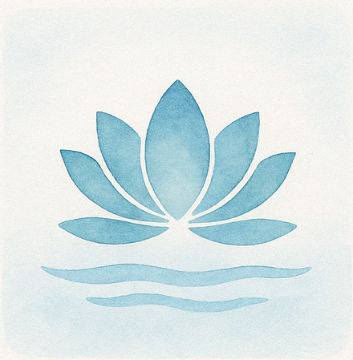
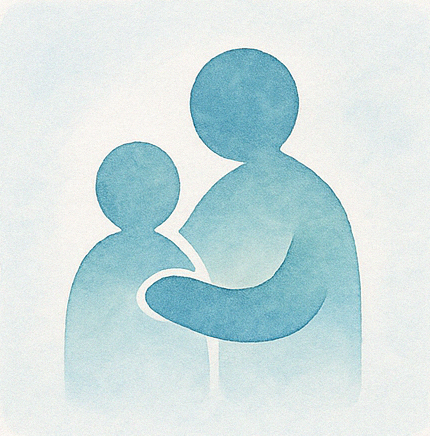
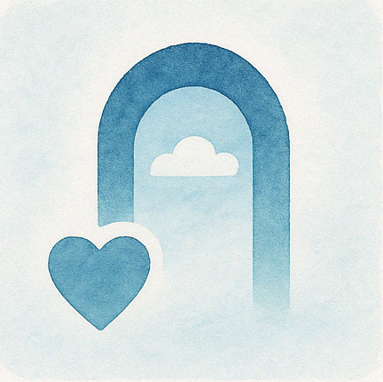
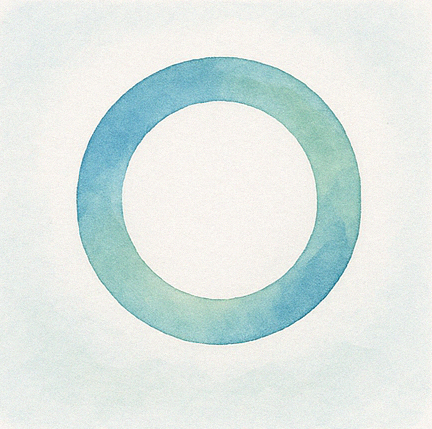

人生の豊かさを生み出す5つの智慧
🔮人生を豊かにする霊的なビジョン
人生の選択と心がけについての考察です。
🌱ゆくゆく人生が豊かになる選択
- 日々、小さな選択の積み重ねが人生のゴールで大きくかえってくる
- 常の心がけが人生の豊かさを生み出す
💎人生の豊かさとは
- いつも心が穏やかで澄み渡っている
- 人に自然体で優しくできる
- 人の行い、世の中の出来事を許せる
- 自らが生かされていることに感謝できる
- 霊的な導きを実感できている
🌊心の穏やかさと清らかさについて
ここでは「心が穏やかで澄み渡っている」状態の価値と、それがもたらす恩恵について説明しています。以下に要点をまとめます：

🌈1. 心の清々しさの恩恵
- 思考が冴え、雑念が減少する
- 過去へのくよくよや未来への不安から解放される
- 小さな悩みや自己卑下から自由になる
⏱️2. 今この瞬間に生きること
- あるがままの自分を受け入れる姿勢
- 今日を精一杯生きることに集中できる
🤝3. 穏やかさがもたらす対人関係の改善
🏡4. 生活全般への好影響
- 身の回りが自然と整頓される
- 落ち着いた生活リズムが確立される
- 疲労やストレスが軽減され、健康状態が改善する
💡5. 実践のヒント
- 呼吸を意識することの重要性
- 毎日少なくとも一回、ゆっくりと深呼吸する時間を作る
まとめ：心の穏やかさを保つことは精神的な充実だけでなく、対人関係や健康、日常生活の質にも直結します。
🌸人への自然な優しさについて
ここでは「自然体で優しくある」ことの本質について説明しています。要点は以下の通りです：

1. 態度の一貫性と平等性
- 相手の立場や地位によって態度を変えないこと
- 見下すことも過剰に恐れることもしない姿勢
2. 自然な優しさの源泉
- 自分を大きく見せようとしないこと
- 権力や立場を利用しないこと
- 年配者にも子供にも同じように歩み寄れる優しさ
3. 自己へのいたわりの重要性
- 自分をいたわれない人の優しさは偽善になりうる
- 自分を犠牲にした優しさは相手に心苦しさを与える
4. バランスの取れた姿勢
- 自然体であることは自分に無理がなく、相手も受け入れやすい
- 我慢や犠牲を伴う「作られた善意」は良くない
- 常に人を優先すると自然な優しさを保つことは難しい
まとめ：真の優しさとは自分と他者の両方を大切にするバランスの上に成り立つものです。
🕊️許しの霊的な意義
ここでは「許す」ということの霊的な意義について説明しています。

1. 人の行為を裁かない姿勢の重要性
- 世の中には裏切りや欺きが横行しているが、他者を批判・裁くことは避けるべき
- すべての人は指導霊によって導かれ、最終的には自らの行いに応じた結果を受ける
2. 批判ではなく内観の大切さ
- 他者の行いは自分自身を映す鏡として捉える
- 他者の中に自分の姿を見出し、自らの行いを改める機会となる
3. 許せない感情の根源
- 許せない気持ちの奥には「恐れ」が隠されている
- 自分の安全や豊かさが脅かされることへの不安が、苛立ちや怒りに変わる
4. 霊的成長としての「許し」
- 許すという行為は霊性を高め、磨き上げることにつながる
- 批判や裁きではなく、許しを実践することが霊的な成長の糧となる
まとめ：人間関係における許しの実践は単なる善行ではなく、霊的な成長のための重要な手段です。
🙏生かされている恵みへの感謝
ここでは「生かされていることへの感謝」について説明しています。要点は以下の通りです：

1. 生きる力の自然な流れ
- 生きようと努力するのではなく、生かされていることを受け入れる姿勢
- 赤ちゃんが自然と歩けるようになるように、人生も自ずと前進していく
2. 内なる力と柔軟性の認識
- 誰もが生きる力を本来持っている
- あらゆる出来事に適応する柔軟性が備わっている
3. 大いなる存在の守護と導き
- 私たちは大きな導きの中で生きている
- 自力で何とかしようとする力みが、かえって導きを受け取れなくする
4. 人生の試練の意味
- 不安や葛藤は人生の脚本の一部
- 試練を乗り越えることで成長を実感できる
- すべての経験には意味と贈り物が隠されている
5. 感謝の力
- すべての出来事に感謝できれば人生は美しく完結する
- 愛されているからこそ多様な体験が用意されている
- 感謝することで「すべて丸くおさまる」調和が訪れる
まとめ：自分の力だけで生きようとするのではなく、生かされていることへの感謝と信頼が、より豊かで調和のとれた人生をもたらします。
✨霊的な導きと人生の意義
ここでは「霊的な導きの実感」について説明しています。要点は以下の通りです：
1. 人生の神聖なデザイン
- 私たちの人生は生まれる前から計画されている
- 一人一人の体験が十分得られるよう配慮されている
- しかし私たちは不安や不満に目を向けがちである
2. 唯一無二の人生
- 「一生」とは宇宙で唯一のあなただけの人生という意味
- 自分にしか生きられない、かけがえのない役割がある
- この尊さを忘れ、人生を卑下してしまうことの残念さ
3. 見守られている安心
- たとえわがままでも愚かでも、指導霊は決して見捨てない
- 常に寄り添い、導き続けている存在がある
- 私たちはそれを見失い、孤独だと誤解している
4. 祈りの意義と実践
- 孤独や虚しさを感じたときは素直に祈ることが大切
- 祈りによって霊的な波長に切り替わり、指導霊との絆が蘇る
- 祈りは一つの技術であり、形式や言葉にとらわれず素直に行うことが大事
5. 個人に相応しい祈り方
- 手本を模倣するのではなく、自分なりの祈り方を見つける
- その人に相応しい祈り方は自然と芽生え育つもの
- 信念を持って導きの存在を信じることが重要
まとめ：私たちは常に霊的な存在に導かれており、その導きを感じ取るための祈りが大切です。